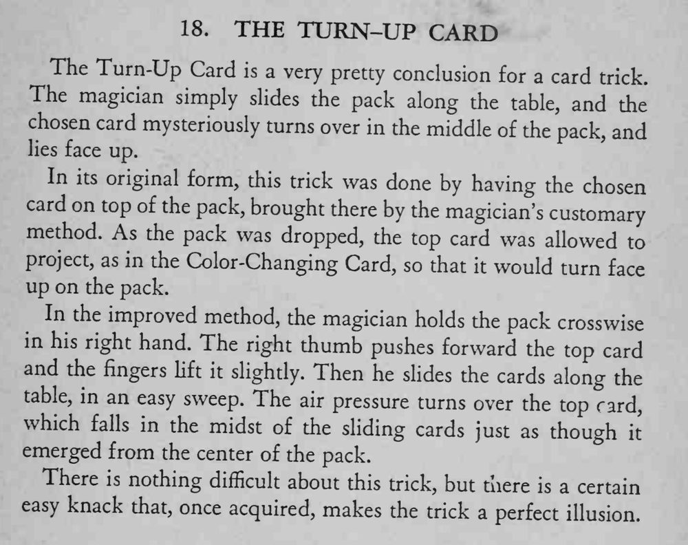

整副牌在桌面上滑出去，选牌忽然在牌堆中间自己翻了个面，牌面朝上躺在牌堆里。
推牌和甩牌的力道要轻快，练出这个手感，效果才像真的。

The Turn-Up Card is a very pretty conclusion for a card trick. The magician simply slides the pack along the table, and the chosen card mysteriously turns over in the middle of the pack, and lies face up. In its original form, this trick was done by having the chosen card on top of the pack, brought there by the magician's customary method. As the pack was dropped, the top card was allowed project, as in the Color-Changing Card, so that it would turn face up on the pack. In the improved method, the magician holds the pack crosswise in his right hand. The right thumb pushes forward the top card and the fingers lift it slightly. Then he slides the cards along the table, in an easy sweep. The air pressure turns over the top card, which falls in the midst of the sliding cards just as though emerged from the center of the pack. There is nothing difficult about this trick, but there is a certain easy knack that, once acquired, makes the trick a perfect illusion.